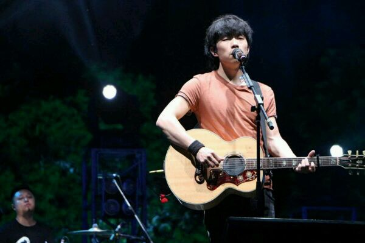

Start here：
1.

成都-赵雷
余路还要走多久
你攥着我的手
让我感到为难的
是挣扎的自由

最早版本的成都，是一个观众在酒吧录的
成都安逸的环境与雷子的声音完美匹配
如果有一所城市让你一直迷恋
大概是城里住着一个你想念的人吧
可惜现在成都的普遍传播
导致一首小众歌曲失去了一些味道
2.

吉姆餐厅-赵雷
挥不去的都写满面孔和青春一起褪落
再也不会有谁牵绊着你踏上远方的路

撇开名利与音乐，
赵雷其实是个很单纯的人，
在大火之后，他依然在创作，
依然在捍卫自己的时间和秩序。
从他的故事里，
我们大约可以知道，
他的这种单纯，
应该是继承自他的母亲。
每个人都只能陪你走一段路，人总是要分开的
赵雷在吉姆餐厅这张专辑写到:
“每个人的心中都有一家≪吉姆餐厅≫。
2011年10月后的那些秋夜，
我总是习惯从工作室出来之后
坐在隔壁胡同的清真餐厅里点几个肉串喝瓶啤酒，
吃完，一个人骑着小摩托车，无拘束的，回家睡觉。
因为想念母亲至深，导致我总有一种钻心的孤独。
每当天色暗下来，每当一切静下来，
眼前就会浮现从前的一幕幕……”
3.
已是两条路上的人-赵雷
我要让你知道
我从不懂得怎么爱你
在那些烂醉如泥的夜里
我唯一想起的人是你
你可以追求你理想中的生活
我们已是两条路上的人
以下均转自网易云音乐评论区:
鸣人用了十五年的时间都没能让樱爱上自己，
雏田最终还是等到了鸣人爱她的那一天。
你为不爱你的人所做的永远只会得到感激或感动，
但爱你的人会一直爱你。
你爱的，你心里的，你希望的，最终都会输给对你好的。
《东邪西毒》里有段台词：
“以前我认为那句话很重要，
因为我相信有些事说出来就是一生一世。
现在想想，说不说也没有什么区别。
有些事情是会变的，
我一直以为自己赢了，
直到有一天我看着镜子才知道我输了。
在我最需要你的时间里，
我最喜欢的人却不在我身边，
如果能重新开始该有多好。”

愿你爱的歌和人，永远不火，小众一生。